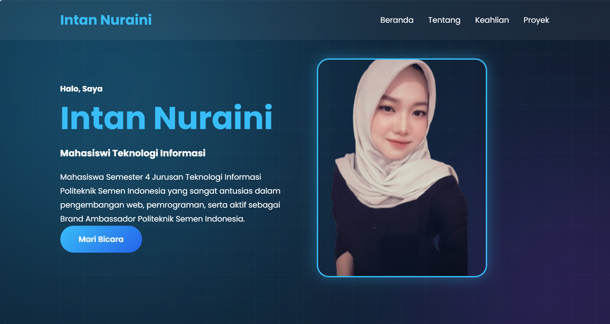

Mahasiswa Semester 4 Jurusan Teknologi Informasi Politeknik Semen Indonesia yang sangat antusias dalam pengembangan web, pemrograman, serta aktif sebagai Brand Ambassador Politeknik Semen Indonesia.
Mari BicaraSaya adalah seorang mahasiswi Semester 4 Jurusan Teknologi Informasi di Politeknik Semen Indonesia.
Memiliki pengalaman sebagai Junior Full Stack Developer melalui pembelajaran dan proyek selama studi di kampus.
Aktif dalam organisasi Brand Ambassador (BA) dan Himpunan Mahasiswa (HIMA), serta terus mengembangkan keterampilan dalam bidang pengembangan web dan pemrograman melalui berbagai proyek dan pembelajaran berkelanjutan.
Terampil mengembangkan website responsif dan menarik.
Mahir dalam desain visual dan pengalaman pengguna.
Membangun aplikasi web interaktif dan dinamis.
Mengembangkan UI modern secara efisien.
Membuat website responsif dengan grid system.
Merancang dan mengelola database aplikasi web.
Pengembangan backend dan manipulasi data.
Figma, Canva, Wireframe dan Prototype Interaktif.
CRUD, Auth, Database Management dan Laravel.
Eloquent ORM, Middleware, API dan Blade.
Component, Hooks, Routing dan Integrasi API.
Pembuatan portofolio saya yang kedua karena file yang pertama sudah hilang.
Lihat Project
Projek awal yang saya buat namun belum sepenuhnya selesai
Lihat Project